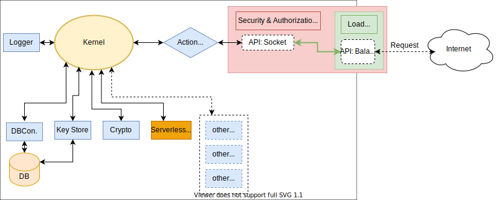

Concepts
Structure

Quick start (Skeleton Project - ExpressKernel Pack)
Includes
- Full Typescript project setup
- Jest test and coverage config
- Docker-Compose file for Development Database
- ESLint config with AirBnB & Prettier presets
- GrandLineX OpenApi generator config
- Example Kernel Extension code
@/src
Variant 1 (GrandlineX cli)
- Run
npm i @grandlinex/project-tool -g - Start cli
gltool -i - Select the new project option.
- Follow the instructions.
Variant 2 (clone project)
- Clone
git clone https://github.com/GrandlineX/skeleton-project.git && cd skeleton-project - Install dependencies
npm instsall - Start database
docker-compose up -d - Build project
npm run build - Build project
npm run start
Skeleton project commands
| Command | Description |
|---|---|
npm run lint |
start ESLint |
npm run test |
start Jest test collection (creates db entry's) |
npm run test-converage |
start Jest test collection + coverage report (creates db entry's) |
npm run start-dev |
start dev script with disabled cors |
npm run makeDocs |
generates Typedoc documentation |
npm run makeSpec |
generates OpenApi spec see |
npm run serveSpec |
generates OpenApi spec see + serve Swagger UI |
Manual install (Existing Project)
- Before we can use the GrandLineX Kernel we need to set up a PostgressDB.
- If you want to use an existing DB go to step 7.
- A simple way to do this is to use a Docker container.
If you dount have docker see here
- Create a
docker-compose.ymlfile. - Use a editor
services:
dev-db:
image: postgres
volumes:
- ./data/db:/var/lib/postgresql/data
env_file:
- .env
ports:
- 5432:5432
- Or run
wget https://raw.githubusercontent.com/GrandlineX/kernel/main/docker-compose.yml -O docker-compose.yml
- Create a
.envfile in the root folder of your Project - Use a editor
DBPATH=localhost
DBPORT=5432
POSTGRES_PASSWORD=example
POSTGRES_USER=dbuser
SERVER_PASSWOR=pw
PUBLICDOMAIN=http://localhost
- Or run
wget https://raw.githubusercontent.com/GrandlineX/kernel/main/.env.example -O .env
- Now we can start the database with
docker-compose up -dordocker compose up -d - Install the kernel package
npm i @grandlinex/kernel - Create a Basic Kernel Object
main.ts/main.js
import Kernel from "@grandlinex/kernel"
const kernel=new Kernel({
appName:"AppName",
appCode:"appcode",
})
kernel.start();
- Start
node main.js\ts-node main.ts